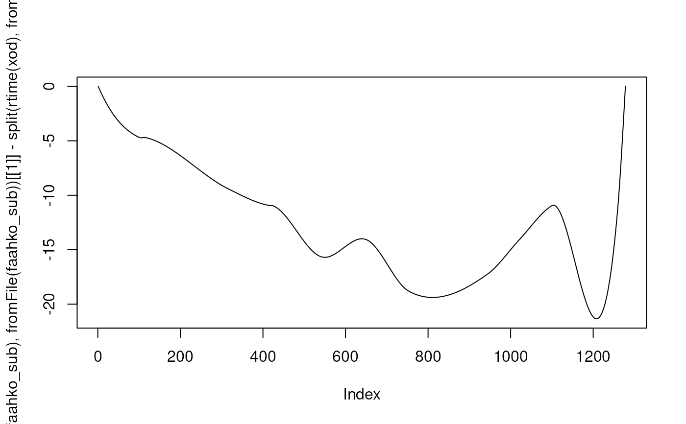

Replaces the raw retention times with the adjusted retention time or returns the object unchanged if none are present.
Arguments
- object
An XCMSnExp or XcmsExperiment object.
Value
An XCMSnExp or XcmsExperiment object with the raw (original) retention
times being replaced with the adjusted retention time.
Details
Adjusted retention times are stored in parallel to the adjusted
retention times in XCMSnExp or XcmsExperiment objects. The
applyAdjustedRtime replaces the raw (original) retention times with the
adjusted retention times.
Note
Replacing the raw retention times with adjusted retention times
disables the possibility to restore raw retention times using the
dropAdjustedRtime() method. This function does not remove the
retention time processing step with the settings of the alignment from
the processHistory() of the object to ensure that the processing
history is preserved.
See also
adjustRtime() for the function to perform the alignment (retention
time correction).
Examples
## Load a test data set with detected peaks
library(MSnbase)
data(faahko_sub)
## Update the path to the files for the local system
dirname(faahko_sub) <- system.file("cdf/KO", package = "faahKO")
## Disable parallel processing for this example
register(SerialParam())
xod <- adjustRtime(faahko_sub, param = ObiwarpParam())
#> Sample number 2 used as center sample.
#> Aligning ko15.CDF against ko16.CDF ...
#> OK
#> Aligning ko18.CDF against ko16.CDF ...
#> OK
#> Applying retention time adjustment to the identified chromatographic peaks ...
#> OK
hasAdjustedRtime(xod)
#> [1] TRUE
## Replace raw retention times with adjusted retention times.
xod <- applyAdjustedRtime(xod)
## No adjusted retention times present
hasAdjustedRtime(xod)
#> [1] FALSE
## Raw retention times have been replaced with adjusted retention times
plot(split(rtime(faahko_sub), fromFile(faahko_sub))[[1]] -
split(rtime(xod), fromFile(xod))[[1]], type = "l")

## And the process history still contains the settings for the alignment
processHistory(xod)
#> [[1]]
#> Object of class "XProcessHistory"
#> type: Peak detection
#> date: Wed Mar 12 08:36:21 2025
#> info:
#> fileIndex: 1,2,3
#> Parameter class: CentWaveParam
#> MS level(s) 1
#>
#> [[2]]
#> Object of class "XProcessHistory"
#> type: Retention time correction
#> date: Wed Feb 11 13:33:34 2026
#> info:
#> fileIndex: 1,2,3
#> Parameter class: ObiwarpParam
#> MS level(s) 1
#>